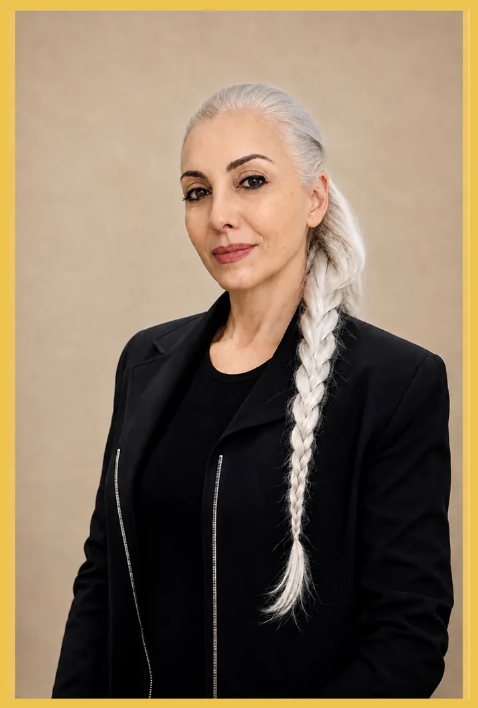

Hakkında
1972 Tekirdağ doğumlu Bülent İşcan, Marmara Üniversitesi Güzel Sanatlar Fakültesi Resim Bölümü'nden mezun oldu. Yıllarca sinema, TV ve reklam sektörüne dekor, aksesuar ve maket üreten sanatçı, tarihi film ve dizilerde gerçeğe en yakın görünümü sahneye taşıma tutkusuyla 26 yaşında hiperrealist heykel sanatına yöneldi. Her eserine aylarca süren bir emekle can katan sanatçı, kırışıklıktan damar izine, bakışındaki ışıktan ten dokusuna kadar en ince ayrıntıyı tek tek işleyerek heykellerine adeta nefes alan bir gerçeklik kazandıran Bülent İşcan, bugün 70'i aşkın müzede, binin üzerinde eseriyle sergileniyor — Topkapı ve Dolmabahçe Sarayları'ndan Çanakkale Tarihi Alanı'na, yurt dışında Çin'den Azerbaycan'a kadar birçok ülkede eserleri yer alıyor.
En çok duygulandığı çalışmalar arasında İstanbul Sinema Müzesi için ürettiği Adile Naşit ve Kemal Sunal heykelleri yer alıyor; yüzlerce fotoğraf ve arşiv taraması sonunda ortaya çıkan bu eserler, bir neslin hafızasını yeniden canlandırdı. İstanbul'daki otuz yıllık atölye hayatının ardından eşi Şenay ile birlikte memleketi Hayrabolu'nun Şalgamlı köyüne yerleşerek üretimini köy sakinleriyle birlikte sürdürmeye başladı; bugün köyde 100'e yakın heykel ortak emekle hayat buluyor.
Sanatçının en dikkat çeken son eseri, Çanakkale Savaşları Gelibolu Tarihi Alan Başkanlığı için tasarladığı 4,5 metre yüksekliğindeki Mehmetçik Heykeli oldu — dönemin fedakârlığını ve cesaretini tüm gerçekliğiyle yansıtan bu dev eser, sanatçıya 2024 yılında Tekirdağ Kültür Elçisi unvanını kazandırdı.
Atölyenin sanat yönetmeni ve koordinatörü olan Şenay İşcan, her projenin başında dosyaları inceleyerek iş planını ve görev dağılımını belirliyor, anlaşmaları yürütüyor. Dönemin ruhuna uygun çalışmalar üretebilmek için tarihi belge ve görselleri araştırıyor, eskizleri hazırlıyor. Kostüm tasarımından — kumaş seçimi, nakış, başlık ve aksesuar — heykel üretiminin kalıp, döküm, saç ve yüz ekimi aşamalarına kadar atölyenin sanatsal sürecinin tamamını koordine ediyor; birlikte çalıştıkları ustalar ve zanaatkârlarla eş güdümü sağlıyor.
Bunun yanında 15 yıldır Türkiye'nin farklı şehirlerini — Tekirdağ, Gaziantep, Konya, Hatay, Denizli, Niğde, Mardin ve Şanlıurfa başta olmak üzere — dolaşarak cepken, üç etek, çarık, bindallı, tel kırma ve heybe gibi tarihi eşyaları topluyor. Depoladığı bu eserleri talep halinde müzelere ücretsiz teslim ediyor; bugüne dek İslam Eserleri Müzesi, Afyonkarahisar Arkeoloji Müzesi, Adana Etnografya Müzesi ve Necmi İğe Evi Etnografya Müzesi gibi kurumlarla çalıştı. Amaç, geçmişten gelen kültürel değerleri gelecek nesillere taşımak.
"Bülent elindeki malzemeye can verir, Şenay o canı dünyaya taşır."

